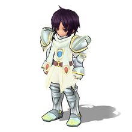
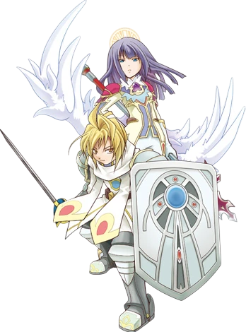
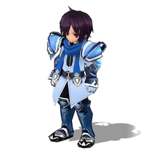
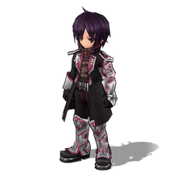
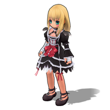

Fencer Master
Fencer Master
 Mr. Bong
Mr. Bong

Knight set
Lv 45

Female
How to get
- All pieces from Arus's Mother, a reward of the Lv 45 Armor Quest
Expert job · Fighter
A main tank job that guards against every attack type and heals and revives allies with light skills.

Requirement: STR 30 or higher and Job Level 30 or higher as a Fencer.
Talk to the Fencer Master and ask to change jobs. He asks you to get a certificate from Mr. Bong in the Iron City Cafe, Lower Part of Iron City.
Travel to the Lower Part of Iron City.
Enter the Iron City Cafe and talk to Mr. Bong. He asks you to bring 1 ×  Canned Ice.
Canned Ice.
Hunt Ogre in the Northern Dungeon or Fury in the Eastern Dungeon for the  Canned Ice.
Canned Ice.
Return to Mr. Bong in the Iron City Cafe (Lower Part of Iron City) and hand over the  Canned Ice. Talk to him again to get the quest Like the Wind (Party).
Canned Ice. Talk to him again to get the quest Like the Wind (Party).
Travel to Iron Volcano. Defeat Lava Pururu ×5 and Gigo ×3 within 10 minutes.
Return to Mr. Bong in the Iron City Cafe and talk to him. He gives you a  Certificate(Quest).
Certificate(Quest).
 Iron StomachPassive · Max Lv 5
Iron StomachPassive · Max Lv 5| Lv | Food recovery bonus | Food use time reduction |
|---|---|---|
| 1 | +15% | 15% |
| 2 | +20% | 20% |
| 3 | +25% | 25% |
| 4 | +30% | 30% |
| 5 | +35% | 35% |
Reduces incoming Blow-type physical damage while active.
| Lv | SP | Cast time | Cooldown | Duration | Blow damage reduction |
|---|---|---|---|---|---|
| 1 | 8 | 1 sec | 1 sec | 10 sec | 25% |
| 2 | 10 | 1 sec | 1 sec | 12.5 sec | 30% |
| 3 | 12 | 1 sec | 1 sec | 15 sec | 35% |
| 4 | 15 | 1 sec | 1 sec | 17.5 sec | 40% |
| 5 | 18 | 1 sec | 1 sec | 20 sec | 45% |
Two-Handed Spear MasteryPassive · Max Lv 5Improves minimum ATK while a two-handed spear is equipped.
| Lv | Minimum ATK |
|---|---|
| 1 | +30 |
| 2 | +35 |
| 3 | +40 |
| 4 | +45 |
| 5 | +50 |
Double ThrustPassive · Max Lv 10Adds a chance for normal attacks to strike twice while using a two-handed spear or rapier.
| Lv | Double attack chance |
|---|---|
| 1 | 2% |
| 2 | 4% |
| 3 | 6% |
| 4 | 8% |
| 5 | 10% |
| 6 | 12% |
| 7 | 14% |
| 8 | 16% |
| 9 | 18% |
| 10 | 20% |
Light WorshipperPassive · Max Lv 5Improves Holy-element weapon and shield buffs received by the character.
| Lv | Holy Weapon bonus | Holy Shield bonus |
|---|---|---|
| 1 | Holy ATK +30, Holy DEF +0 | Holy ATK +0, Holy DEF +0 |
| 2 | Holy ATK +35, Holy DEF +5 | Holy ATK +35, Holy DEF +5 |
| 3 | Holy ATK +40, Holy DEF +10 | Holy ATK +40, Holy DEF +10 |
| 4 | Holy ATK +45, Holy DEF +15 | Holy ATK +45, Holy DEF +15 |
| 5 | Holy ATK +50, Holy DEF +20 | Holy ATK +50, Holy DEF +20 |
Heals the target for a percentage of the target's maximum HP.
| Lv | MP | Cast time | Cooldown | Healing |
|---|---|---|---|---|
| 1 | 7 | 0.5 sec | 1 sec | 40% Max HP |
| 2 | 14 | 0.5 sec | 1.1 sec | 50% Max HP |
| 3 | 21 | 0.5 sec | 1.2 sec | 60% Max HP |
| Lv | SP | Cast time | Cooldown | Duration | L.AVOID | Ranged damage reduction |
|---|---|---|---|---|---|---|
| 1 | 8 | 2.5 sec | 0.5 sec | 30 sec | +20 | 20% |
| 2 | 12 | 2.25 sec | 0.75 sec | 25 sec | +30 | 25% |
| 3 | 16 | 2 sec | 1 sec | 20 sec | +40 | 30% |
| 4 | 20 | 1.75 sec | 1.25 sec | 15 sec | +50 | 35% |
| 5 | 24 | 1.5 sec | 1.5 sec | 10 sec | +60 | 40% |
Rapier MasteryPassive · Max Lv 5Improves minimum ATK while a rapier is equipped.
| Lv | Minimum ATK |
|---|---|
| 1 | +30 |
| 2 | +35 |
| 3 | +40 |
| 4 | +45 |
| 5 | +50 |
Deals Holy-element Blow physical damage.
| Lv | MP | SP | Cast time | Cooldown | Damage rate |
|---|---|---|---|---|---|
| 1 | 3 | 5 | 1 sec | 1 sec | 240% |
| 2 | 3 | 7 | 1 sec | 1 sec | 280% |
| 3 | 4 | 9 | 1 sec | 1 sec | 320% |
| 4 | 4 | 12 | 1 sec | 1 sec | 360% |
| 5 | 5 | 15 | 1 sec | 1 sec | 400% |
Reduces incoming Slash-type physical damage while active.
| Lv | SP | Cast time | Cooldown | Duration | Slash damage reduction |
|---|---|---|---|---|---|
| 1 | 8 | 1 sec | 1 sec | 10 sec | 25% |
| 2 | 10 | 1 sec | 1 sec | 12.5 sec | 30% |
| 3 | 12 | 1 sec | 1 sec | 15 sec | 35% |
| 4 | 15 | 1 sec | 1 sec | 17.5 sec | 40% |
| 5 | 18 | 1 sec | 1 sec | 20 sec | 45% |
Deals physical damage in a forward spear pattern up to 2 cells ahead and knocks affected targets back 2 cells.
| Lv | SP | Cast time | Cooldown | Area pattern | Knockback | Damage rate |
|---|---|---|---|---|---|---|
| 1 | 14 | 1 sec | 1 sec | Forward cone | 2 cells | 330% |
| 2 | 18 | 1 sec | 1 sec | Forward cone | 2 cells | 360% |
| 3 | 22 | 1 sec | 1 sec | Forward cone | 2 cells | 390% |
| 4 | 26 | 1 sec | 1 sec | Forward cone | 2 cells | 420% |
| 5 | 30 | 1 sec | 1 sec | Forward cone | 2 cells | 450% |
| Lv | MP | SP | Cast time | Cooldown | Duration | Damage redirected to possessor |
|---|---|---|---|---|---|---|
| 1 | 5 | 5 | 6 sec | 1 sec | 50 sec | 20% |
| 2 | 10 | 12 | 5 sec | 2 sec | 40 sec | 30% |
| 3 | 15 | 20 | 4 sec | 3 sec | 30 sec | 40% |
| 4 | 20 | 27 | 3 sec | 4 sec | 20 sec | 50% |
| 5 | 25 | 35 | 2 sec | 5 sec | 10 sec | 70% |
| Lv | SP | Cast time | Cooldown | Duration |
|---|---|---|---|---|
| 1 | 54 | 0.5 sec | 2 sec | 27 sec |
| 2 | 56 | 0.5 sec | 2 sec | 30 sec |
| 3 | 58 | 0.5 sec | 2 sec | 33 sec |
| 4 | 60 | 0.5 sec | 2 sec | 36 sec |
| 5 | 62 | 0.5 sec | 2 sec | 39 sec |
Deals physical damage in a 3x3 area around the selected ground point.
| Lv | SP | Cast time | Cooldown | Area | Damage rate |
|---|---|---|---|---|---|
| 1 | 16 | 1 sec | 0.5 sec | 3x3 | 280% |
| 2 | 22 | 1 sec | 0.5 sec | 3x3 | 310% |
| 3 | 28 | 1 sec | 0.5 sec | 3x3 | 340% |
| 4 | 34 | 1 sec | 0.5 sec | 3x3 | 370% |
| 5 | 40 | 1 sec | 0.5 sec | 3x3 | 400% |
Deals physical damage and may reduce the target's S.HIT by 40 for 30 seconds.
| Lv | SP | Cast time | Cooldown | Damage rate | S.HIT down chance | S.HIT down |
|---|---|---|---|---|---|---|
| 1 | 12 | 1 sec | 1 sec | 180% | 25% | -40 |
| 2 | 13 | 1 sec | 1 sec | 180% | 30% | -40 |
| 3 | 14 | 1 sec | 1 sec | 180% | 35% | -40 |
| 4 | 15 | 1 sec | 1 sec | 180% | 40% | -40 |
| 5 | 16 | 1 sec | 1 sec | 180% | 45% | -40 |
| Lv | SP | Cast time | Cooldown | Duration | Auto-revive chance |
|---|---|---|---|---|---|
| 1 | 10 | 4 sec | 1 sec | 300 sec | 10% |
| 2 | 15 | 4 sec | 1 sec | 300 sec | 20% |
| 3 | 20 | 4 sec | 1 sec | 300 sec | 30% |
| 4 | 25 | 4 sec | 1 sec | 300 sec | 40% |
| 5 | 30 | 4 sec | 1 sec | 300 sec | 50% |
| Lv | MP | SP | Cast time | Cooldown | Damage rate |
|---|---|---|---|---|---|
| 1 | 10 | 16 | 1.5 sec | 1 sec | 200% |
| 2 | 10 | 20 | 1.75 sec | 1 sec | 340% |
| 3 | 10 | 24 | 2 sec | 1 sec | 480% |
| 4 | 10 | 28 | 2.25 sec | 1 sec | 620% |
| 5 | 10 | 32 | 2.5 sec | 1 sec | 760% |
Knight SpiritPassive · Max Lv 1| Possession slot | Main bonuses |
|---|---|
| Right hand | ATK/MATK +14%, S.HIT/L.HIT +14%, Max HP/MP/SP +5% |
| Left hand | ATK/MATK +7%, S.HIT/L.HIT +6%, DEF/M.DEF +14%, Max HP/MP/SP +7.5% |
| Accessory | ATK/MATK +8%, S.HIT/L.HIT +9%, S.AVOID +14%, Max HP/MP/SP +7.5% |
| Armor | ATK/MATK +5%, DEF/M.DEF +7.5%, Max HP/MP/SP +14% |
| Lv | SP | Cast time | Cooldown | Damage rate | Damage rate vs Undead |
|---|---|---|---|---|---|
| 1 | 16 | 1 sec | 1 sec | 220% | 420% |
| 2 | 17 | 1 sec | 1 sec | 240% | 440% |
| 3 | 18 | 1 sec | 1 sec | 260% | 460% |
| 4 | 19 | 1 sec | 1 sec | 280% | 480% |
| 5 | 20 | 1 sec | 1 sec | 300% | 500% |
| Lv | SP | Cast time | Cooldown | Stiffness chance | Stiffness duration |
|---|---|---|---|---|---|
| 1 | 2 | 0.5 sec | 1 sec | 20% | 1 sec |
| 2 | 4 | 0.5 sec | 1 sec | 40% | 2 sec |
| 3 | 6 | 0.5 sec | 1 sec | 60% | 3 sec |
| 4 | 8 | 0.5 sec | 1 sec | 80% | 4 sec |
| 5 | 10 | 0.5 sec | 1 sec | 100% | 5 sec |
| Lv | SP | Cast time | Cooldown | Damage rate | Bonus from Flying Spear |
|---|---|---|---|---|---|
| 1 | 12 | 1 sec | 1 sec | 400% | +10% x Flying Spear Lv |
| 2 | 14 | 1 sec | 1 sec | 440% | +10% x Flying Spear Lv |
| 3 | 16 | 1 sec | 1 sec | 480% | +10% x Flying Spear Lv |
| 4 | 18 | 1 sec | 1 sec | 520% | +10% x Flying Spear Lv |
| 5 | 20 | 1 sec | 1 sec | 560% | +10% x Flying Spear Lv |
| Lv | MP | Cast time | Cooldown |
|---|---|---|---|
| 1 | 80 | 2.5 sec | 0.5 sec |
| 2 | 80 | 2 sec | 0.5 sec |
| 3 | 80 | 1.5 sec | 0.5 sec |
| 4 | 80 | 1 sec | 0.5 sec |
| 5 | 80 | 0.5 sec | 0.5 sec |
Synergy ForcePassive · Max Lv 3Increases physical damage while the character is in a party.
| Lv | Physical damage bonus |
|---|---|
| 1 | +1% |
| 2 | +3% |
| 3 | +6% |
Forces enemies in a 5x5 area around the caster to strongly target the caster.
| Lv | SP | Cast time | Cooldown | Area | Aggro value |
|---|---|---|---|---|---|
| 1 | 11 | 0.5 sec | 2 sec | 5x5 | 3,000 |
| 2 | 17 | 0.5 sec | 1.5 sec | 5x5 | 3,500 |
| 3 | 23 | 0.5 sec | 1 sec | 5x5 | 4,000 |
Performs three delayed physical hits against enemies in a straight line up to 4 cells in front of the caster.
| Lv | SP | Cast time | Cooldown | Hits | Damage rate per hit |
|---|---|---|---|---|---|
| 1 | 22 | 0.5 sec | 3.5 sec | 3 | 210% |
| 2 | 28 | 1 sec | 3 sec | 3 | 240% |
| 3 | 34 | 1.5 sec | 2.5 sec | 3 | 270% |
| 4 | 40 | 2 sec | 2 sec | 3 | 300% |
| 5 | 46 | 2.5 sec | 1.5 sec | 3 | 330% |




